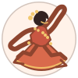

Listen
Percussion, beats, tala phase and changing energy are estimated from your track.

nrityaDance, by designMusic in. Movement out.
Nritya shapes a Bharatanatyam performance from your music, arranging recorded adavu movement around its pulse, tala and energy.
Your creative instrument
Set the tala and tempo, choose the movement vocabulary, then generate a performance you can play back and inspect.
Your song's rhythm becomes a movement map.
| # | Time | Tala position | Local BPM | Energy |
|---|
Read these estimates carefully. Timing and foot-strike comparisons use automated, unverified estimates. There is no human-labelled ground truth in this release, so a small error does not prove musical accuracy.
No phrase timeline yet.
One measured phrase at a time
A clear, inspectable process connects your recording to a dancer on screen.
Percussion, beats, tala phase and changing energy are estimated from your track.
Beats are aligned to a tala cycle so phrase choices have a musical frame.
Recorded adavu units are selected, time-warped and joined at a steady frame rate.
A virtual dancer follows the planned poses. Inspect timing, hand-shape labels and movement sources.
The movement library
Pose and hand landmarks are extracted from a curated Bharatanatyam adavu dataset. Confirmed movement units are available by default; an unconfirmed family can be included when you want to explore.
A learned prior can assist hand-shape selection when model annotations are available.
Dataset: vibhuti16/bharatnatyam_adavus · CC BY-NC-ND 4.0 · Non-commercial research use only.
Your next movement starts with a sound.
Make a choreography